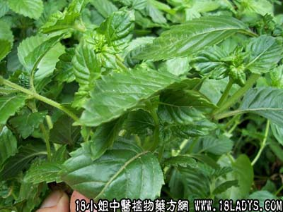

别名：仙人冻。
植物名：凉粉草。
生长环境：本品为一年生草本。生于山区草丛中，潮湿的水沟，小溪旁，常成丛生。
分布：广东各地山区，我国南部各地亦有。
入药部分：全草。
采集期：春、夏。
采购地点：从药材公司购入。
性味：性凉、味甘淡。
主治、用量和用法：1、高血压：干用1至2两，清水煎服；2、筋骨疼痛，配伍用；3、关节痛，配伍用；4、酒风脚：干用2至4两，猪脚1只、清水8碗，煎成碗半服。
验方1：（治酒风脚放）凉粉草2两、生葛8两、清水十碗，煎成两碗，分二次服。
（方解）本方凉粉草、凉血清热去骨火，生葛去骨火，止骨痛，为民间常用之药，治酒风脚甚效。
（方歌）酒风下行足肿疼，风湿久潜骨火焚，凉粉草同生葛煎，清火止痛效如神。
验方2：（治筋骨疼痛、关节痛方）凉粉草2两、茅根2两、老鼠拉冬瓜5钱、桑枝两半、石螺1斤、清水十碗，煎成二碗，分二次服。
（方解）方中凉粉草能清火；白茅根退伏热；老桑枝、老鼠拉冬瓜、势螺利关节，凡筋骨为火烁而致之疼痛患者用之甚效。
（方歌）筋骨关节痛且疼，凉粉草与白茅根，老鼠拉冬瓜石螺并，桑枝同煎效可珍。
参考资料：《羊城晚报》（1963.6.22）介绍黑凉粉的制造法如下：
用料：凉粉草1斤、米1斤（浸透磨成米浆）、硼砂三钱（以水溶解备用）、枧水一两。
制法：将凉粉草加水5～6斤，枧水1两，一同放入瓦煲内煮几小时，至茎叶能搓烂为度。煮好冷却后，将茎叶彻底搓烂，并以布袋过滤去渣，再将滤出的凉粉草水加水二十至二十五斤，方在镬内煮沸。然后将米浆和硼砂水搅匀，慢慢地加入，边加边搅，待米浆完全熟透便可导入清洁的盆中，冷却后即成坚韧爽脆的凉粉，吃时刨条或切粒，加上糖浆。
凉粉草的制造，应十分注意清洁卫生，身体虚弱的人，不宜多吃。
本文解释权归中药大全，本文地址：https://www.daquan.com/post/1623.html